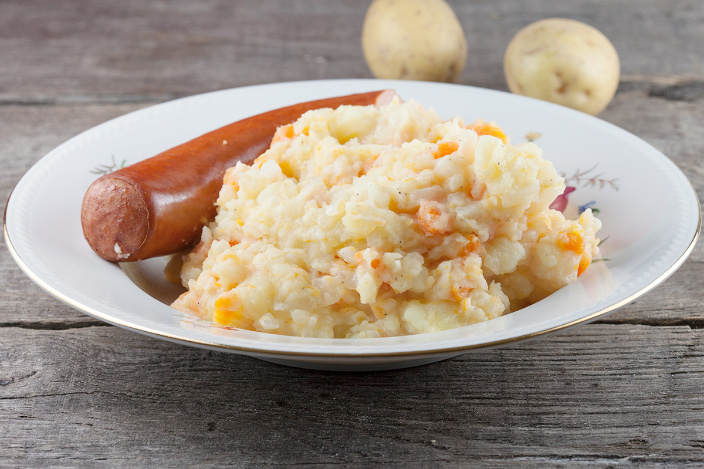

Dutch Hutspot

Description
Hutspot, which translates to hodgepodge in English is a famous Dutch dish, that is centuries old
Ingredients
- 1 kilo floury potatoes
- 700 gram carrots
- 7 large onions
- 2 bay leafs
- large knob of butter
- large dash of full fat milk
- large pinch of ground nutmeg
- smoked sausage
Steps
- Peel the potatoes and chop them into chunks
- Add the potatoes to a large pan along with water and salt and bring to a boil
- peel the carrots and chop them into chunks.
- Add the carrots to the boiling water along with the bay leafs
- Peel the onions and coarsely chop them
- Add them to the large pan and cook until the potatoes are done
- Remove the bay leaves when the potatoes are done
- Use a potato masher to mash the potatoes, carrots and onions
- Season with ground nutmeg, pepper and salt
- Serve all this with your smoked sausage
Main Page